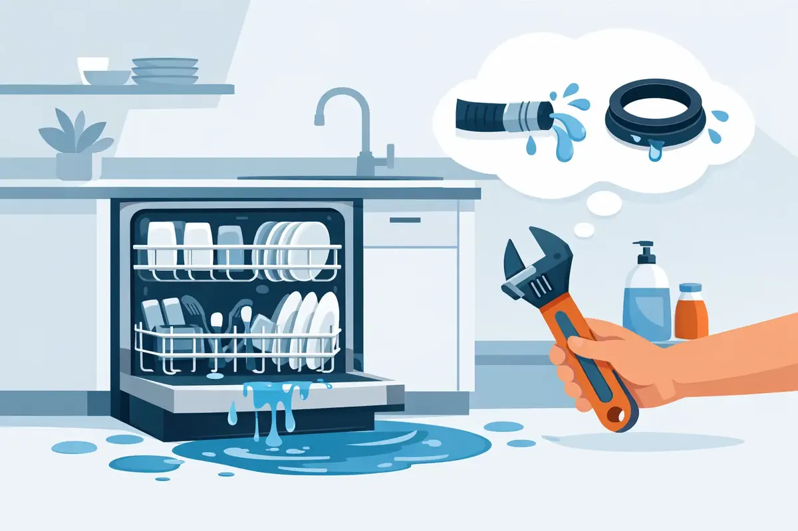

A puddle at the base of the dishwasher can turn a normal kitchen cleanup into a stressful moment fast. If you are asking, why is my dishwasher leaking, the answer may be as simple as a worn door seal or as serious as a failed water line behind the appliance. The right first move is not to run another cycle to see what happens. Stop the water, protect the floor, and narrow down where the leak begins.
Dishwasher leaks are especially worth taking seriously in Middle Tennessee homes, where a slow, hidden drip can damage cabinet bases, flooring, drywall, and the ceiling below a second-floor kitchen. Some causes are safe for a homeowner to check. Others call for a trained plumbing professional before a minor repair becomes a restoration project.
First, Stop the Leak Safely
If water is actively coming from the dishwasher, press Cancel or turn the unit off. Shut off the dishwasher’s water supply valve if you can reach it, usually under the kitchen sink or in a nearby cabinet. If the leak is substantial, turn off the home’s main water supply until the source is clear.
Unplug the dishwasher or switch off its circuit at the electrical panel before reaching around it. Water and electrical connections do not mix. Put down towels, remove standing water, and avoid running the appliance again until you know why it leaked.
A useful clue is when the water appears. Water during filling often points to a supply connection, inlet valve, or float problem. Water escaping during washing may point to the door gasket, spray arm, or detergent. A leak that shows up when the dishwasher drains can involve the drain hose, air gap, garbage disposal connection, or sink plumbing.
Why Is My Dishwasher Leaking From the Door?
The door is one of the most common leak locations. A dishwasher depends on a rubber gasket around the opening to keep spray water inside. Over time, that gasket can become brittle, flattened, loose, or coated with food residue.
Open the door and inspect the seal closely. Wipe away grime with a soft cloth and warm, soapy water. Look for cracks, tears, gaps, or sections that have pulled away from the channel. If the gasket is damaged, it usually needs replacement rather than a temporary patch.
Door alignment matters, too. A heavy item stored against the door, a bent hinge, or a latch that does not fully catch can keep the door from closing tightly. If you notice that you must push hard on the door to start a cycle, or water drips from the lower corners, do not force it. The door or latch may need adjustment.
Sometimes the dishwasher itself is simply not level. If it tilts forward, water can work against the door seal and spill onto the floor. A level can confirm whether the appliance needs its adjustable feet reset. This is a small adjustment, but it should be done carefully so the machine remains stable and its connections are not strained.
Too Many Suds Can Cause a Dishwasher Leak
A surprising number of dishwasher leaks are caused by soap. Hand dish soap is made to create plenty of foam, while dishwasher detergent is formulated for a low-suds appliance. Even a small amount of regular dish soap can create enough foam to push water past the door.
Using too much dishwasher detergent can also create excess sudsing, particularly with soft water. If the tub is full of foam, cancel the cycle and let the suds settle. Remove what you can with towels, then run a short rinse cycle only after confirming that no hand soap remains. Do not keep adding products in an attempt to cancel the suds, as that can complicate the problem.
Loading can contribute as well. A large baking sheet, cutting board, or tall pan placed near the front may deflect spray directly toward the door. Check that the lower spray arm turns freely and that oversized items are not blocking the door from closing or disrupting water flow.
Leaks Under the Dishwasher Often Come From Connections
If the floor is wet beneath or behind the appliance, the water supply line and drain line deserve attention. The supply line brings clean water to the dishwasher. Its fittings can loosen over time, and older lines can corrode, crack, or develop pinhole leaks.
The drain hose carries used water out of the dishwasher. It may leak at the dishwasher connection, under the sink, at an air gap, or where it attaches to the garbage disposal. A loose clamp, split hose, or poor connection can allow water to run down behind cabinets where it is difficult to see.
Pulling out a built-in dishwasher is not always a simple homeowner task. The appliance can be secured to the counter, hardwired, and tightly connected to supply and drain lines. Moving it without care can worsen a weak fitting or damage a water line. If the source appears to be behind the unit, it is wise to have it inspected rather than guessing.
Check the Garbage Disposal Connection
A newly installed dishwasher that will not drain properly may have a blocked garbage disposal connection. When a disposal is installed, a knockout plug must be removed before the dishwasher drain hose is connected. If it remains in place, dirty water may back up into the dishwasher. That backup does not always cause a floor leak, but it can contribute to overflow and drainage issues.
Under the sink, look for moisture around the drain hose connection and disposal inlet. If you see water there, stop using the dishwasher until the connection is repaired and secured.
Internal Parts That Can Make a Dishwasher Leak
Not every dishwasher leak is visible from outside. Several internal components can fail after years of normal use.
The water inlet valve controls the water entering the appliance. If it sticks open or its seal fails, the dishwasher may overfill. Many models use a float or sensor to tell the machine when the water level is high enough. A float blocked by debris, a failed switch, or an electronic sensor issue can allow too much water into the tub.
A cracked tub, damaged pump seal, or worn circulation pump can also send water beneath the dishwasher. These repairs often require disassembly and model-specific replacement parts. Depending on the appliance’s age and condition, repair may make good sense, or replacement may be the better investment. A professional can help separate a repairable seal or connection issue from an appliance that has reached the end of its useful life.
Do Not Overlook a Leak Near the Dishwasher
Water near the dishwasher is not always coming from the dishwasher. A leaking kitchen faucet supply line, sink drain, garbage disposal, refrigerator line, or pipe inside the wall can travel along cabinets and appear at the appliance base.
Dry the area completely, then inspect under the sink while someone runs the faucet, operates the disposal, and fills and drains the sink. If the dishwasher leaks only during its cycle, the appliance or its dedicated connections are more likely involved. If moisture returns while the dishwasher is off, the kitchen plumbing may be the actual source.
This distinction matters because replacing a dishwasher gasket will not solve a failing shutoff valve or drain connection. It can also prevent unnecessary appliance repairs.
When to Call a Plumber for a Dishwasher Leak
A homeowner can often clean a door gasket, correct a loading issue, or confirm that the wrong soap was used. Call for professional help when water is coming from a supply line, drain connection, shutoff valve, hidden pipe, or the area behind the dishwasher. The same is true when the leak has affected cabinets, flooring, or a ceiling below.
You should also call if the dishwasher overfills, repeatedly trips an electrical breaker, will not drain, or continues leaking after obvious issues have been addressed. These symptoms can involve more than one system, and continued use can create water damage or electrical risk.
For homeowners and property managers in Murfreesboro and across Middle Tennessee, Angle Stop Plumbing can inspect the water and drain connections serving the appliance, identify hidden plumbing leaks, and make repairs with upfront communication and respect for your home. A qualified appliance technician may be needed for a failed internal dishwasher part, while a plumber is the right call for the water supply, drain piping, valves, and leak damage risks around it.
A dry floor after cleanup does not always mean the problem is gone. Keep an eye on the cabinet base, nearby flooring, and the space under the sink for the next day or two. Acting early protects the kitchen your family relies on every day and brings peace of mind back to a room that should make life easier, not wetter.